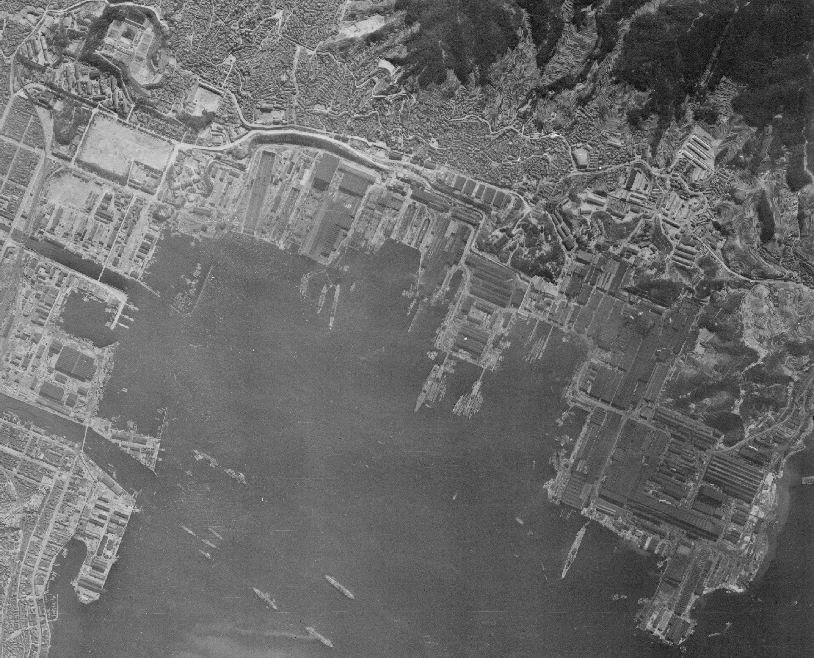
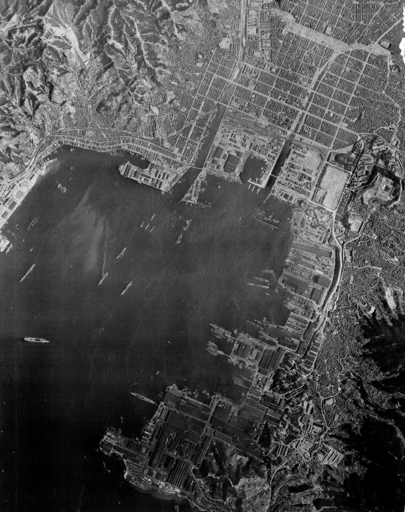
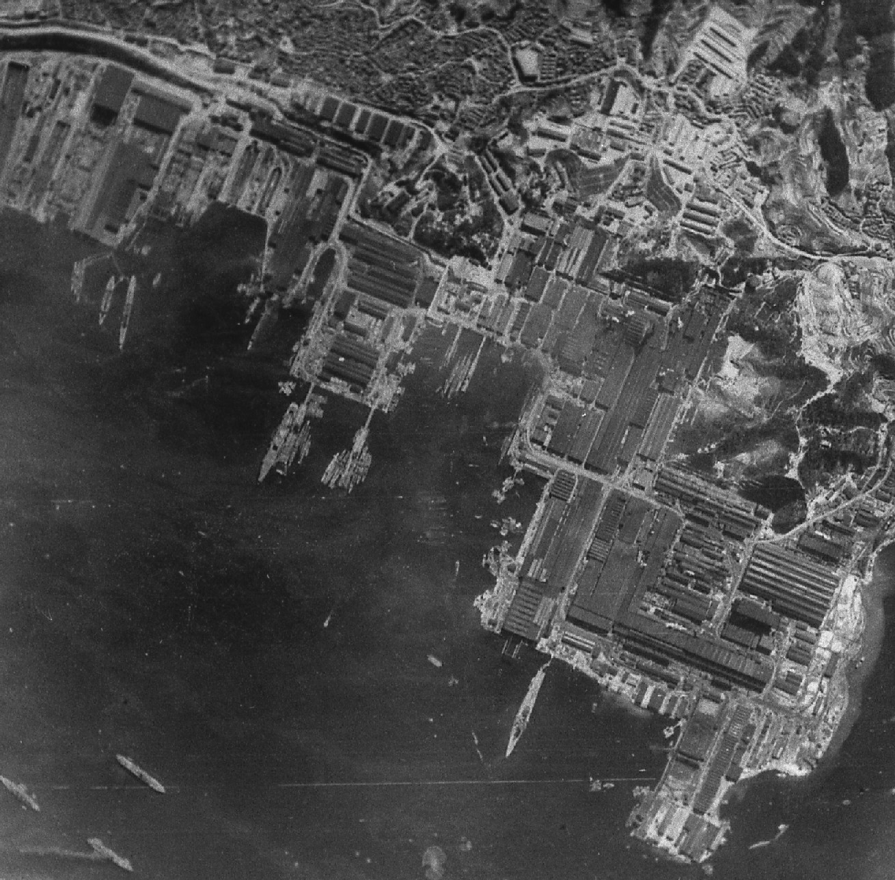
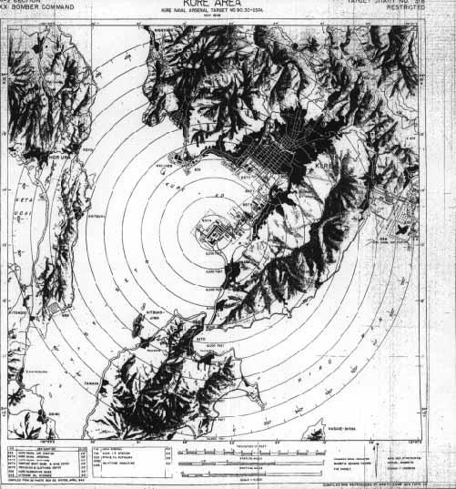
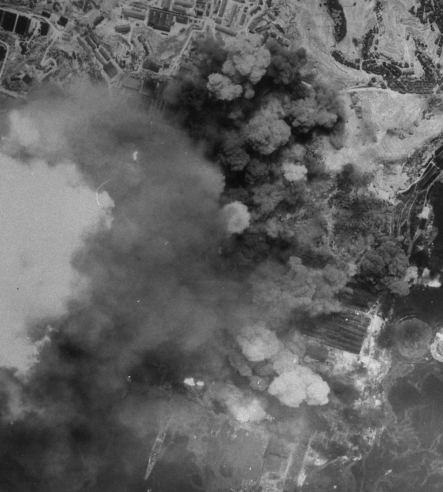
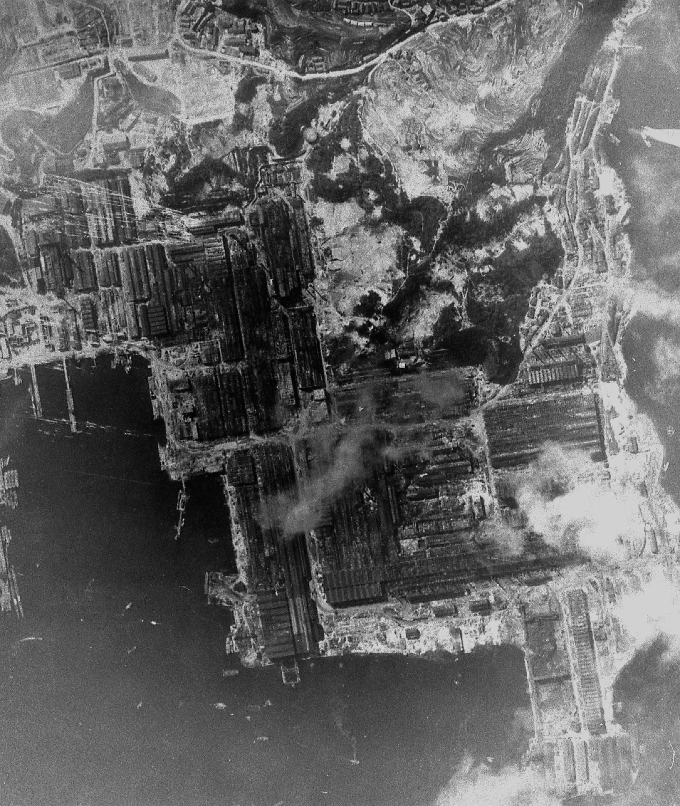
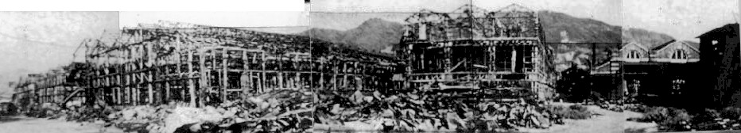
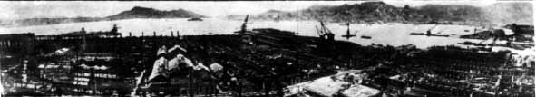

・呉の戦災
２．主な空襲
・呉海軍工廠造兵部

呉軍港・呉海軍工廠米国立公文書館所蔵（1945年4月）
呉軍港・呉海軍工廠
呉海軍工廠
・呉海軍工廠造兵部への空襲
呉海軍工廠、壊滅 (1945年6月22日) － 市民に隠された空襲 －
日本海軍の一大拠点であった呉。約60年もの間、次々と新型軍艦を世に送り出し続け、呉海軍の名を世界に響きわたらせていた呉海軍工廠は、この日、B29の爆撃によって壊滅させられました。

呉工廠を標的

呉工廠を爆撃中

爆撃後の呉工廠

廃墟の呉工廠

敗戦直後の呉工廠・呉軍港
1945年(昭和20)6月22日午前9時31分から午前10時43分までの間に、162機のB29が合計1289発(796トン)もの爆弾を、呉海軍工廠に投下したのです。 アメリカ軍の目標は海軍工廠の中でも造兵部(兵器工場)でした。戦後に使用するためだったのでしょうか、造船部にはほとんど爆弾は落ちていません
当時、呉海軍工廠では勤労動員の学生を含む約10万人が働いていました。造兵部はほぼ壊滅し、海軍工廠に隣接する宮原･警固屋地区、また安芸郡音戸町にも爆弾は降り注ぎました。
この空襲は、翌日の新聞には「死者1名もなし」と報道されましたが、実際には少なくとも400人以上の人たちが犠牲になっています。その中には、呉市･広島県内をはじめ中国･四国地方からの動員学徒、女子挺身隊も含まれていました。
呉市の戦災関係の公式記録である『戦災復興誌』に、この空襲のことは記録されていません。
米軍『戦術作戦任務報告』にみる爆撃データ
●第73航空回の104機のB29が、高度約5490メートル(1万8000フィート)から、250キロ爆弾を227発(57トン)、500キロ爆弾を204発(102トン)、1トン爆弾を416発(416トン)投下した。
●第58航空回の58機のB29が、高度約6430メートル(2万1100フィート)から、500キロ爆弾を442発(221トン)投下した。
●合計して、162機のB29が爆弾を1289発(796トン)投下した。27機がレーダー爆撃、135機が有視界爆撃だった。
爆撃効果の判定は、以下のとおりである。
･呉海軍工廠の屋根面積の72%、26万7794平方メートルに損害を与えた。
トップページに戻る